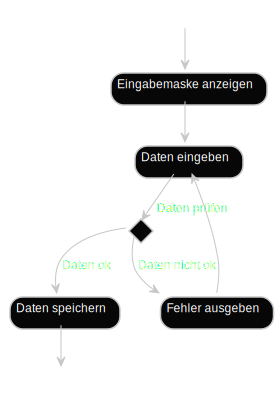

Anforderungsmanagement
Lernziele
Kennen
- Erhebungsmethoden
- Prüfmethoden
- Inhalte von Anforderungsdokumenten
Wissen und Anwenden
- Erheben von Anfoderungen
- Schreiben eines Anforderungsdokuments
Essence
Stakeholders


Opportunity

Requirements


System

Work


Team

Way of Working


Einführung
Warum ist das wichtig?
- Eine hohe Zahl von Softwarefehlern entsteht bereits bei den Anforderungen
- Je höher der Abstand zwischen Fehler machen und Fehler finden/beheben, desto teurer
- Man geht von bis zu 100fach höheren Kosten aus
Gründe für Anforderungsfehler
- Fehlende Anforderungen
- Unklare Formulierung
- Unterschiedliches Domänenwissen
- Implizites Vorwissen
- Auslassen von „Selbstverständlichem“
Was ist eine Anforderung?
- Bedingung oder Fähigkeit, die von Benutzer (Person oder System) zur Problemlösung oder Zielerreichung benötigt wird
- Bedingung oder Fähigkeit, die System erfüllen oder besitzen muss, um Vertrag, Norm, Spezifikation oder andere Formalia zu erfüllen
Was ist ein Stakeholder?
Ein Stakeholder eines Systems ist eine Person oder Organisation, die (direkt oder indirekt) Einfluss auf die Anforderungen des betrachteten Systems hat.
Stakeholdermanegement
- Wünsche und Bedürfnisse verstehen
- Dokumentieren
- Risiko minimieren, dass das System nicht den Bedürfnissen und Wünschen entspricht
Anforderungsmanagement
- Kennen der relevanten Anforderungen
- Konsens unter Stakeholdern über Anforderungen herstellen
- Anforderungen dokumentieren
Teilaufgaben
- Ermitteln
- Dokumentieren
- Prüfen und abstimmen
- Verwalten
Formale Hilfsmittel
- Technische, schriftliche Kommunikation
- Glossar
- Beschreibungssprachen wie UML
- Referenzierbarkeit (REQ-1, REQ-2, SH-1, SH-2, …)
Arten von Anforderungen
- Funktionale Anforderung
- Qualitätsanforderung
- Randbedingung
Funktionale Anforderung
Eine funktionale Anforderung ist eine Anforderung bezüglich des Ergebnisses eines Verhaltens, das von einer Funktion des Systems bereitgestellt werden soll.
Qualitätsanforderung
Eine Qualitätsanforderung ist eine Anforderung, die sich auf ein Qualitätsmerkmal bezieht, das nicht durch funktionale Anforderungen abgedeckt wird.
→ Qualität der Funktionalität, Zuverlässigkeit, Benutzbarkeit, Effizienz, Änderbarkeit, Übertragbarkeit
Randbedingung
Eine Randbedingung ist eine Anforderung, die den Lösungsraum jenseits dessen einschränkt, was notwendig ist, um die funktionalen Anforderungen und die Qualitätsanforderungen zu erfüllen.
Anforderungen ermitteln

Anforderungsquellen
Stakeholder
- Müssen identifiziert werden
- Management nötig
Dokumente
- Normen/Standards/Gesetze
- Dokumente des Altsystems
Bestehende Systeme
- Möglichkeit zum Ausprobieren
Anforderungsquellen (Beispiel)
Kano-Modell
Basismerkmale
Selbstverständlich vorausgesetzte Systemmerkmale (unbewusst)
Leistungsmerkmale
Explizit geforderte Systemmerkmale (bewusst)
Begeisterungsmerkmale
Vorher unbekannte Merkmale, die überraschen und begeistern (unbewusst)

Anforderungen dokumentieren
Anforderungsspezifikation
- Basis für die Systementwicklung
- Rechtliche Verbindlichkeit
- Beherrschung von Komplexität
- Zugänglichkeit
Text vs. Modell
Req-1 Das System muss die Eingabemasken
anzeigen.
Req-2 Nachdem die Aktion „Eingabemaske anzeigen”
beendet wurde, oder nachdem die Aktion „Fehler anzeigen” beendet wurde,
muss das System dem Benutzer die Möglichkeit bieten, Daten
einzugeben.
Req-3 Nachdem die Aktion „Daten eingeben” beendet wurde
und falls die Daten ok sind, muss das System die Daten speichern.
Req-4 Nachdem die Aktion „Daten eingeben” beendet wurde
und falls die Daten nicht ok sind, muss das System die Fehler
ausgeben.

Sichten auf Anforderungen
Strukturperspektive
- Beziehungen im Systemkontext
- Struktur von Daten
Funktionsperspektive
- Datenfluss und –verarbeitung
- Systematik
Verhaltensperspektive
- Systemzustände
- Verhalten
Randbedingungen
Übersicht
- Rahmenbedingungen die Einfluss auf Anforderungen oder Lösungsmöglichkeiten haben
Randbedingungen (Beispiel)
Kontext
Übersicht
Zum Kontext des geplanten Systems gehören
- Andere Systeme mit operationellem Zusammenhang
- Rollen bzw. Personen die im Betrieb mit dem System interagieren
- Notwendige Schnittstellen
Darstellung sollte beinhalten
- Systemgrenze des betrachteten Systems
- Interagierende Nachbarsysteme und Akteure
- Schnittstellen zwischen System und Nachbarsystem
Modellierung z.B. mit UML-Komponentendiagramm oder bei eingebetteten Systemen alternativ mit SysML-Blockdiagramm
Kontext (Beispiel)
Domäne
Übersicht
- Spezifikation von fachlichen Begriffen und fachlichen Daten
- Modellierung der Domänendaten
- ER-Diagramm oder UML-Klassendiagramm
Domäne (Beispiel)
Glossar (Beispiel)
Dynamik
Übersicht
- Modellierung von Anwendungsfällen
- Tabellarisch
- UML Use Case
- Qualitätsanforderungen
- Ablaufdynamik
- Kontrollfluss
- Datenfluss
- Zustandsmodellierung
Use Cases (Beispiel)
Qualitätsanforderungen
- Typischerweise textuell
- Klassisches Mittel
- Text kann Modelle ergänzen
- Manches lässt sich nicht mit Modellen ausdrücken


Beispiele
Das System muss dem Kunden die Möglichkeit bieten, sich über Seminare und Veranstaltungen zu informieren.
Das System muss die Kundendaten permanent speichern.
Das System muss fähig sein, dem Buchhaltungssystem Rechnungsdaten mindestens einmal pro Tag zur Verfügung zu stellen.
Qualitätsanforderungen (Beispiel)
Ablaufdynamik (Beispiel)
Prüfen und Abstimmen
Prüfkriterien
Inhalt
Wurden alle relevanten Anforderungen in erforderlicher Detaillierung erfasst?
Dokumentation
Wurden Dokumentations- und Spezifikationsvorschriften eingehalten?
Abgestimmtheit
Stimmen die Stakeholder überein?
Sind Konflikte aufgelöst?
Prüftechniken
- Reviews
- Stellungnahme
- Inspektion
- Walkthrough
- Perspektivenbasiertes Lesen
- Prüfung durch Prototypen
- Einsatz von Checklisten
Stellungnahme
- Ein Dritter liest die Anforderungen gegen
- Suche nach Qualitätsmängeln
- Markierung und Erläuterung
Inspektion
Planung
- Inspektionsziel
- Artefaktauswahl
Fehlersuche
- Einzeln oder im Team
Fehlersammlung
- Sammeln
- Konsolidieren
- Dokumentieren
Walkthrough
- Autor stellt Reviewern Anforderungen gemäß seiner Priorisierung und Sortierung vor
- Qualitätsmängel werden in Sitzung identifiziert und protokolliert
Perspektivenbasiertes Lesen
- Mehrmaliges Lesen
- Jeweils Fokus auf eine Perspektive
- Kunde/Nutzer
- Softwarearchitekt
- Tester
Prototypen
- Erlebbare Anforderungen
- Zwei Typen
- Wegwerfprotoypen
- Evolutionäre Prototypen
- Prototyp deckt Teil der Anforderungen ab
Checklisten
- Fragen und Aussagen
- Leitfaden
Verwaltung
Grundlagen
- Anforderungen werden in einem Textdokument oder einem Anforderungsmanagementtool verwaltet
- Neben Name und Beschreibung können verschiedene Attribute aufgenommen werden
Attribute
Wir nutzen folgende Attribute:
- Identifikator
- Name
- Beschreibung
- Quelle
- Priorität
- Mandatory
- Nice-to-have
- Optional
| Attributtyp | Bedeutung |
|---|---|
| Version | Aktueller Versionsstand |
| Autor | Autor(in) der Anforderung |
| Begründung | Beschreibt, weshalb die Anforderung für das System von Bedeutung ist |
| Stabilität | Werden noch Änderungen erwartet? Z.B. fest, gefestigt oder volatil |
| Kritikalität | Risiken (Schadenhöhe / Eintrittswahrscheinlichkeit) |